小组成员: 邓静怡,肖惠文
准备工作
-
从仓库拉取最新的代码
-
修改
vmlinux.lds，将用户态程序uapp加载至.data段
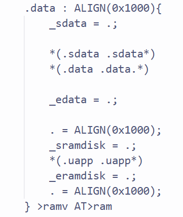 -
修改makefile编译且链接新的文件夹
创建用户态进程
更新结构体
- 本次实验只需要创建4个用户态进程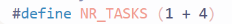
- 将特权寄存器设置到thread_struct中
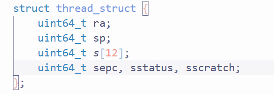 - 为多个用户态进程设置自己的页表
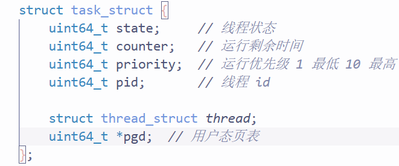
内核线程可以共享一个页表,多个用户态进程则需要保证相对隔离
修改task_init
对于每个用户进程的初始化:
- 增加用户态标志位
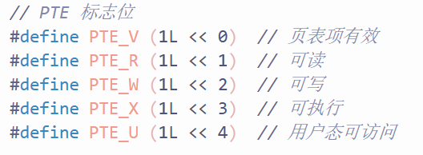 - 初始化 sepc、sstatus、sscratch
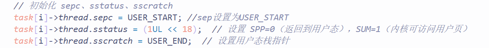 - 创建页表并复制内核页表到创建的页表中
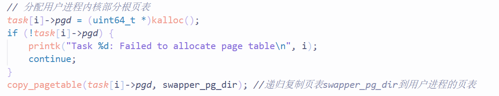- 复制递归函数入口
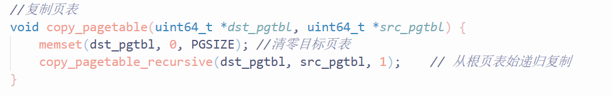 - 复制递归函数实现
- 如果是一级/二级页表,就对页表的每一项(共512项)
1. 从源页表PTE中提取下一级页表的物理地址
2. 为新页表分配下级页表的空间,递归复制下级页表
3. 为新页表PTE设置好对下级页表指向 - 如果是三级页表.复制源页表的每一项即可.
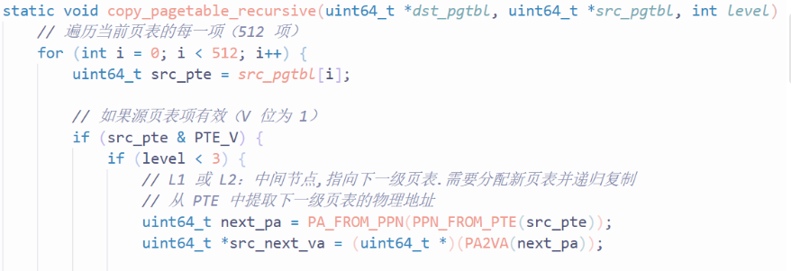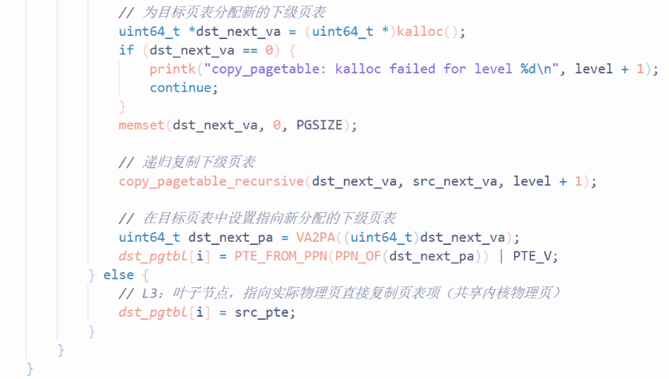
- 如果是一级/二级页表,就对页表的每一项(共512项)
- 复制递归函数入口
- 分配一块新的内存地址,拷贝 uapp 进去.然后将页面映射到页表中
- 先计算所需的页数（uapp 的大小除以 PGSIZE 后向上取整）
- 调用 alloc_pages() 函数
- 再将 uapp memcpy 过去
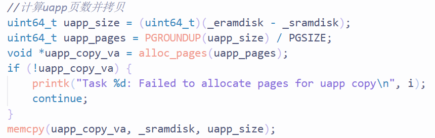 - 映射到页表中.
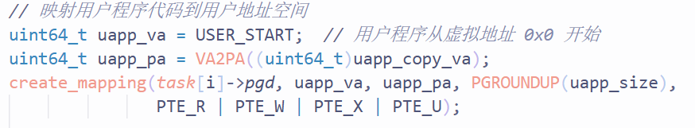
- 设置栈-两个
- 用户态栈：我们可以申请一个空的页面来作为用户态栈，并映射到进程的页表中
 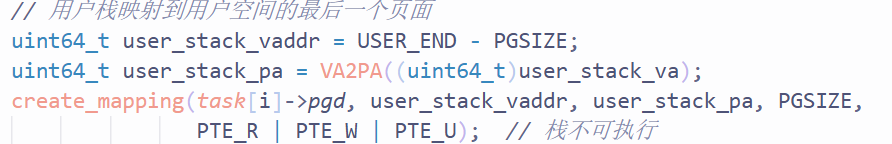
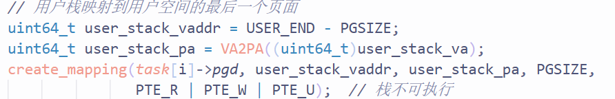 - 内核态栈: 在 lab3 中已经设置好了，就是 thread.sp
- 用户态栈：我们可以申请一个空的页面来作为用户态栈，并映射到进程的页表中
alloc_pages:
- 分配物理页号并转换为虚拟地址返回.
uapp: - 用户程序,编译生成uapp.bin纯二进制文件,链接时放入内核数据段.然后为每个进程拷贝一份uapp[到新分配的物理内存中][并且重新映射到用户进程自己的虚拟地址],防止冲突.
- 每个用户态进程有自己的虚拟地址0x0 → 0x4000000000 (USER_END)
切换逻辑
由另一位同学负责
异常分发与调试
由另一位同学负责
ELF 解析与系统调用实现
系统调用实现
- 在发生系统调用异常时,调用系统调用处理函数

- 进入系统调用处理函数,根据系统调用号分发到各个分处理函数,传入不同的参数
- 然后设置regs中的返回值并手动将sepc+4
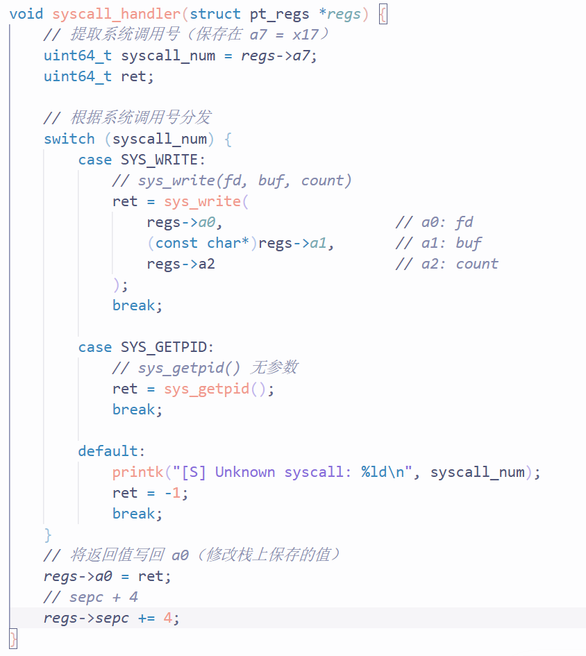 - write() 逻辑
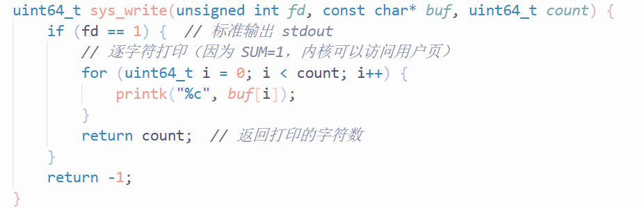 - getpid()逻辑
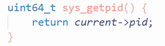
- 然后设置regs中的返回值并手动将sepc+4
ELF
-
section:细粒度
-
segment:粗粒度.一个segment里面可能包含多个section.我们按segment为单位加载到内存
-
ELF header: 包含入口地址\program headers在文件中的偏移量\有多少个program headers(需要加载的段)
-
program header: 每个program header描述一个segment
- 段类型:是否需要加载
- 在文件中的位置:从文件第几个字节开始
- 虚拟地址:加载到内存的哪个地址
- 文件里这段有多大size
- 内存里需要多大空间
- 权限
未初始化数据在文件中不需要存储,只需要记录有多大
但是在内存中就需要确切地分配好空间.file大小和mem大小的的差别就在这里(bss段.)加载之后直接清零即可
- 更换payload
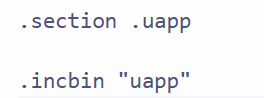 - 修改task_init初始化步骤
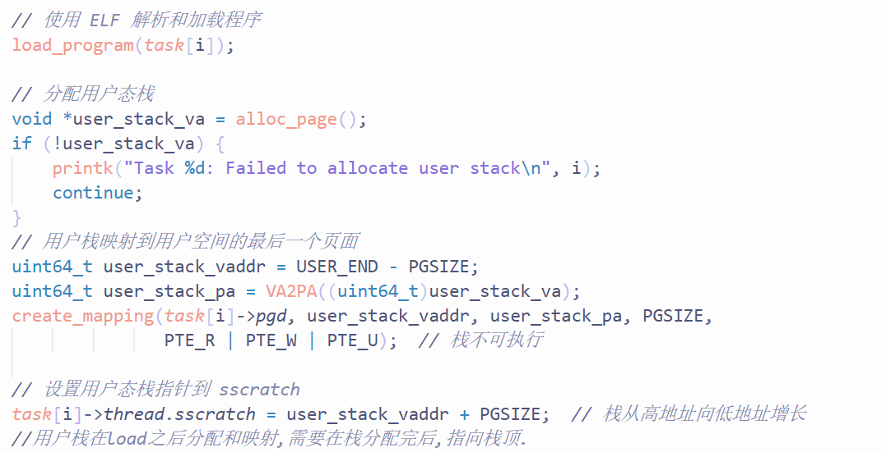- 将原本读取二进制文件相关代码修改为使用 ELF 解析和加载程序
- 分配完用户态栈后,设置sscratch寄存器
- ELF加载函数
- 内核区读取 ELF 信息[本实验中所有进程共用一个uapp因此是读取一样的代码和数据]
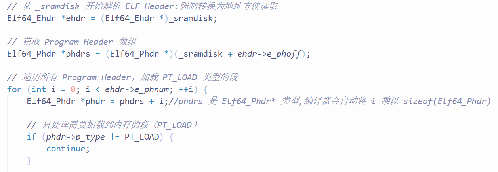 - 为这个程序的每个 segment 分配独立的物理内存
- 计算需要映射的内存大小并计算需要映射的页数
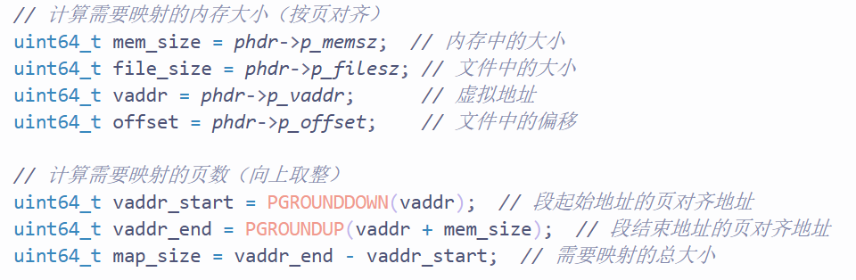 - 按照页对齐分配物理内存
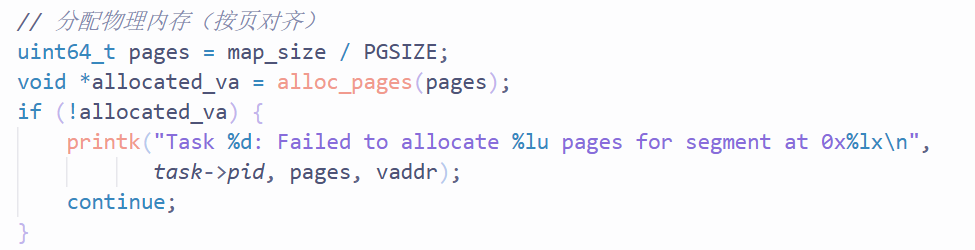 - 将段内容从ELF文件拷贝到分配的内存[拷贝filesize]
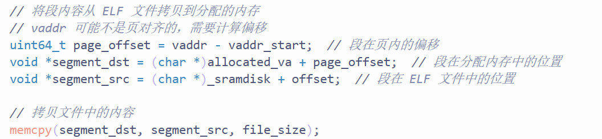 - 将bbs段空间清零[memsize-filesize]
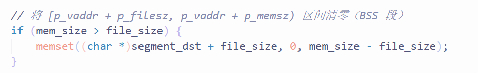 - 设置权限
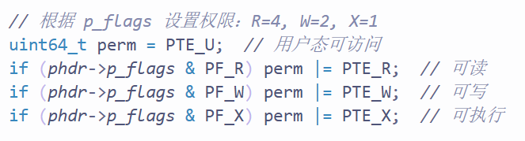
- 计算需要映射的内存大小并计算需要映射的页数
- 建立虚拟地址映射
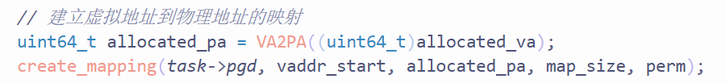 - 设置程序入口地址sepc[ELF]
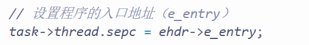
- 内核区读取 ELF 信息[本实验中所有进程共用一个uapp因此是读取一样的代码和数据]
编译并运行
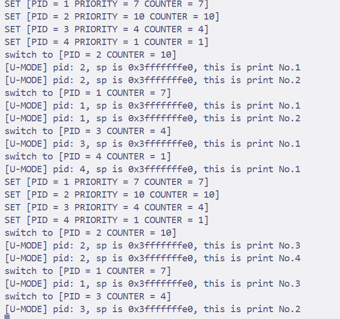
思考题
-
我们在实验中使用的用户态线程和内核态线程的对应关系是怎样的？（一对一，一对多，多对一还是多对多，言之有理即可）
实验里调度的基本单位就是 task_struct.它同时保存了内核线程的寄存器上下文和对应用户态的关键寄存器.调度器每次切换的其实是这个结构本身,这个结构又只对应一个用户态进程.而没有在多个用户线程之间再映射同一个内核线程,因此可以认为是一对一的关系. -
系统调用返回为什么不能直接修改寄存器？
陷入内核时 _traps 会把所有寄存器复制到 pt_regs,真正返回用户态时会从 pt_regs 恢复.如果内核里直接改真实寄存器,下一次 sret 恢复又会被 pt_regs 覆盖,所以必须写回 regs→a0 等保存区，保证状态一致. -
针对系统调用，为什么要手动将 sepc + 4？
sepc 保留触发异常的指令地址.ecall 是一条 4 字节的指令,如果不手动加 4,sret 回去后还会再次执行同一条 ecall,进入死循环,所以要显式加 4 跳过它. -
为什么 Phdr 中，
p_filesz和p_memsz是不一样大的，它们分别表示什么？
p_filesz 是 segment 在 ELF 文件里真实占用的字节，比如 .text、.data；p_memsz 是进程运行时需要的内存大小，它还包含 .bss 这种在文件里不占空间,但运行时要被清零的部分，所以常常更大.加载时要先拷贝 p_filesz 区间,再把 p_filesz 到 p_memsz 清零. -
为什么多个进程的栈虚拟地址可以相同？用户态程序有没有方法知道栈所在的物理地址？
每个进程有私有页表,把同一个用户栈虚拟地址映射到不同的物理页.因为用户态无法访问页表,也不能读取物理地址,所以它看不到真实物理位置,只能按虚拟地址使用,来做到地址空间隔离.
心得体会
- ELF: 一种可执行文件格式,里面除了代码和数据以外还包括目录[说明文件结构\入口点\段信息],以及附录[符号表,调试信息等]
- 纯二进制文件: 只包含代码和数据,没有目录和附录
- strip: 去掉ELF中非必须信息的过程.一般是用 objcopy 将 ELF 转换为纯二进制（.bin）
先运行纯二进制文件,再切换成ELF文件.是为了通过简单操作验证基本流程是否正常,再切换到ELF支持更复杂的功能
用户态进行系统调用的过程
- 用户态调用ecall
- cpu会自动做的事情
- 保存异常发生的PC到sepc
- 记录异常原因到scause
- 记录来自Umode到s’s’tasstatus
- 切换到Smode
- stvec写入PC: 跳转到_traps
- traps会切换栈:
- 从用户栈切换到内核栈
- 在内核栈上分配空间[pt_regs]并保存寄存器
- 调用handler,调用的时候会覆盖原本的寄存器
sie: 中断类型开关.决定哪些终端类型可以作用
sstatus.sie: s态全局开关,决定在s态(内核态执行时),是否允许中断.
当cpu在用户态运行时,特权级的中断总是启用的,不管sstatus是如何设置的.